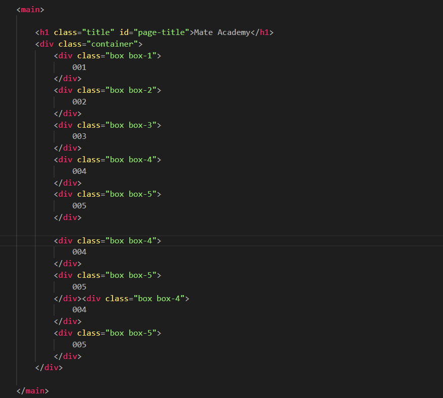
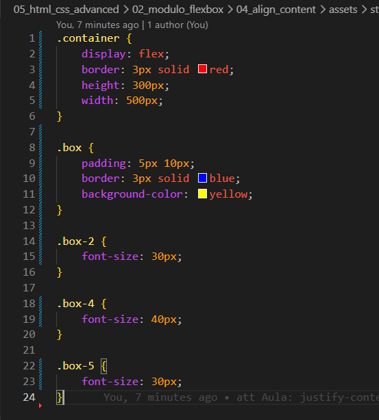
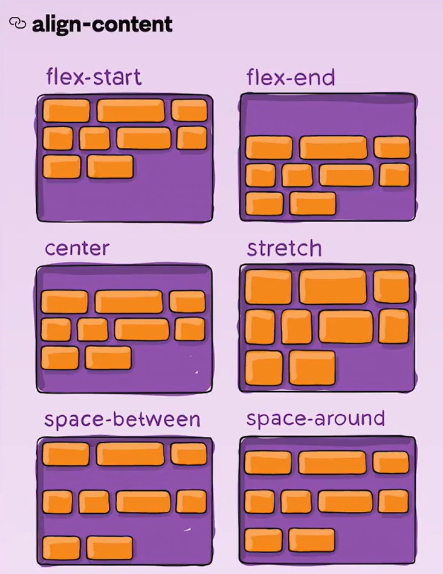

align-content
Intro
Aqui iremos aprender a como controlar elementos caso não caibam em seus containers.
Aqui iremos aprender a como controlar elementos caso não caibam em seus containers.
HTML:

CSS:

Aqui iremos utilizar basicamente o mesmo código da aula passada, porém iremos adicionar alguns elementos a mais para podermos simular nossos elementos ultrapassando o elemento pai.
Os elementos que não cabem, como podemos observar, saem dos limites do container.
Para mudarmos isso podemos usar a propriedade flex-wrap: wrap;.
Por padrão vem com nowrap (sem quebra de linha). Ao definirmos como wrap, permitimos a quebra de linha para que o elemento não ultrapasse o container.
Funciona de forma semelhante ao justify-content, mas controla o alinhamento das linhas do flex container (quando há múltiplas linhas com wrap), ou seja, no eixo transversal.
